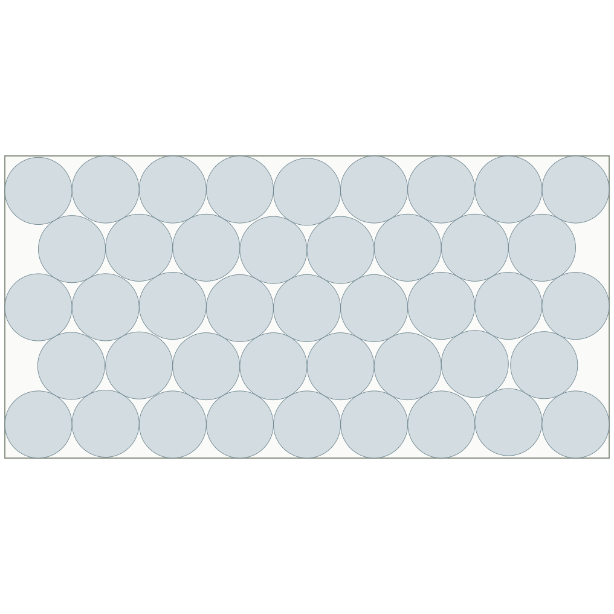

Packing problems
43 circles in a 1 × 0.5 rectangle
Equal circles in a 1 × 0.5 rectangle; larger radius is better.


This arrangement
0.055564426
Common radius · 8 significant figures
Precision lead · 1.29e-07% larger radius than the comparison value from MinMax Arena in the 21 November 2026 ledger.
| Arrangement | Common radius |
|---|---|
| This arrangement | 0.055564426 |
| MinMax Arena | 0.055564426 |
Difference: 7.1482100e-11 larger radius.
The published score is converted from a 2 × 1 rectangle. Lead is smaller than one P12 scoring increment. Guastella has pending submissions in this count range.